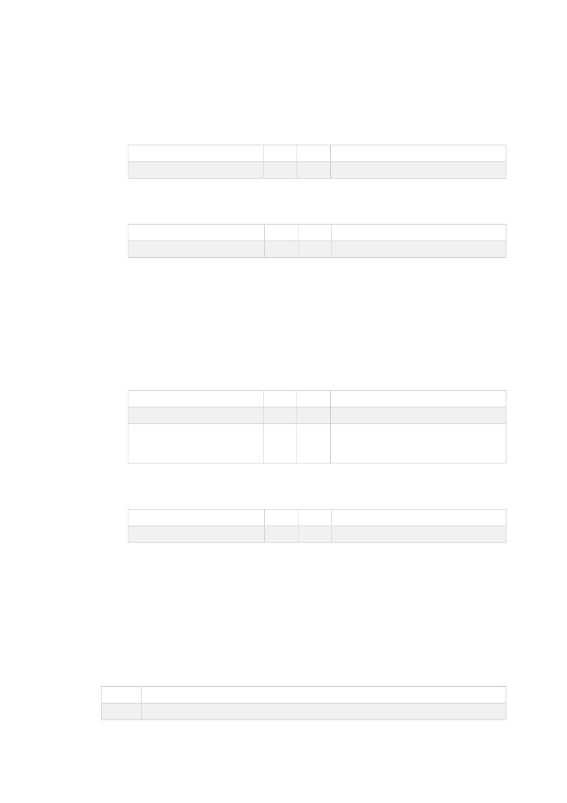

15
/
16
Şifreli veri üretmek için kullanılır.
Gönderilecek Parametreler:
Parametre
Tip
U
Açıklama
Data
N
-
Şifrelenecek Veri
Sonuç Parametreleri:
Parametre
Tip
U
Açıklama
Sonuc
N
-
İşlem sonucu
Sistemde kayıtlı bin kodlarını ve işlem yapılabilecek SanalPOS_ID bilgisini
öğrenebilirsiniz. Bilgilendirme amaçlıdır.
Gönderilecek Parametreler:
Parametre
Tip
U
Açıklama
G
NS
-
ST_WS_Guvenlik Nesnesi
BIN
N
6
Boş bırakılırsa tüm BIN kodları
döner. Dolu gönderilişe o BIN
koduna ait bilgiler döner.
Sonuç Parametreleri:
Parametre
Tip
U
Açıklama
Sonuc
N
-
İşlem sonucu
6. HATA KODLARI
Servislere gerçek ortamda HTTPS protokolü üzerinden erişilecektir.
İşlemlerin
gerçekleşmesi için kurum internet çıkış IP adresi veya IP Blokları, web sitesi
adresi iletilmeli ve tarafımızdan gerekli tanımlar yapılmalıdır.
Kodu
Açıklama
1
Başarılı
